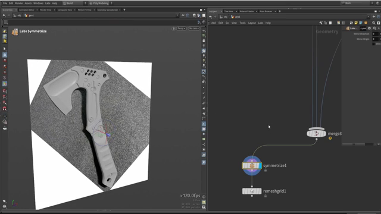
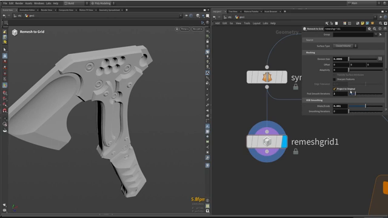

Houdini で斧を作る 5 — ボルトの仕組みとハイポリ／ローポリ
出典: Axe modeling || Houdini tutorial （Simon Houdini さん / 1:07:59 / 英語）の 52:38〜最後まで。 このページは、上記の動画を見ながら自分用にまとめた日本語の学習メモです。作者公式の翻訳ではありません。 前回はハンドルの稜線とグリップでした。
この記事で扱うこと
モデリング編の最終回です。ボルトを並べる仕組みを作り、 テクスチャリングに渡すためのハイポリとローポリを書き出します。
1. ボルトの仕組みを作る
参照写真を見ると、上のプレートにボルトが7本並んでいます。 1本ずつ配置するのではなく、点を置いてそこに形をコピーする仕組みにします。
点を置く
Addノードで点の数を7にします- フロントビューに切り替えます。点は中央に固まっているので、 1つずつ掴んで参照写真の位置に置いていきます
「完璧である必要はありません」とのことで、あとから微調整できます。
点に形をコピーする
使うのは Copy to Points です。
「Houdini でとてもよく使われるノードです」と紹介されていました。
コピーするものは2種類あります。
| 用途 | 作り方 |
|---|---|
| 穴（引き算する側） | Tube を40分割くらいで小さく作り、軸を合わせて回転 |
| ボルト本体 | 同じチューブを複製し、6角形にして潰し、引き算で溝を作る |
穴のほうは Boolean の Subtract で本体から引きます。
このときチューブを少しずらして配置すると、面取りが自動的に付きます。
ボルト本体は Merge で足し込み、Transform で位置を合わせます。
「やりすぎず、単純に Transform で済ませます」とのことでした。
この仕組みごと使い回す
中央のプレートにも5本のボルトがあります。 作ったボルトの仕組みを、まるごとコピー＆ペーストします。
貼り付けたら、点の数を 7 から 5 に変えて位置を動かすだけです。
ボルトの太さや大きさも Transform ひとつで変えられます。
仕組み自体が再利用できるので、 似たものが増えても手間がほとんど増えません。
2. パーツごとに ID を振る

ここが後工程に効いてくる仕込みです。
Attribute Createを置きます- 名前を
IDにします - クラスを Primitive、型を String にします
- 値をパーツごとに
A、B、C… と付けます。 ボルトだけはboltsという名前にしていました
すべてを Merge したあとでも、どのポリゴンがどのパーツかを
取り出せるようにするためです。
ID マップを作る
Color ノードの Color from Attribute を使い、
クラスを Primitive にして ID を指定すると、
パーツごとに色分けされた ID マップができます。
これは Substance Painter などに渡すマスクとして使えます。 「ボルトだけを狙う」といった操作が簡単になります。
プレビュー用に、刃は薄いグレー、中央プレートは中間グレー…と 実際の色を付けておくのも紹介されていました。Houdini 内で完成イメージを掴むためです。
3. ハイポリを作る

ハイポリ化には Remesh to Grid が使われていました。
上の画像で設定が読み取れます。
| パラメータ | 値 |
|---|---|
| Surface Type | Closed Volume |
| Element Size | 0.0005 |
| Adaptivity | 0 |
| Project to Original | 有効 |
| VDB Smoothing | 0.001 |
まとめてリメッシュすると破綻する
全部を一度にリメッシュすると、プレート同士やボルトが1つの塊に融合してしまいます。
解決策として、パーツごとに個別にリメッシュする方法が取られていました。 動画では「4回ループする」と説明されており、パーツの数だけ処理を繰り返す形です。
こうするとパーツの境界が保たれ、 エッジがきれいに丸まってベイクに向いた形になります。 品質を上げたければ解像度を上げるだけです。
ID を引き継ぐ
リメッシュ後も ID を残したいので、Attribute Copy で ID を転送します。
色が表示されないことがありますが、これは
Houdini がポイントの色を優先するためです。
ポイントの色とプリミティブの色が重複しているので、
ID をプリミティブからポイントに promote してしまうのが簡単です。
あとは FBX ノードで書き出せば、ハイポリは完成です。
4. ローポリを作る
ローポリは Merge したものから PolyReduce で作ります。
- 目標ポリゴン数を指定します。動画では最初 7,000 を狙っていました
- 実際には 8,500 くらいが「ディテールが全部残る良い値」だったとのことです
- ボルトのディテールも残っていました
「ボルトをローポリから外すこともできます。数値を変えるだけです」とも言われていました。
UV
UV 展開で触っていた項目です。
- 回転ステップを増やすと、配置の選択肢が広がります
- パディングと解像度を調整すると、パーツが均等に散らばります
Harden UV Seamsを有効にすると、 ベイクがうまくいくことがあるそうです
書き出したものを Substance Painter に持っていくと、ID マップのおかげで マテリアルの割り当てがとても簡単になります。そこから Unreal へ、という流れでした。
この記事のまとめ
- ボルトは
Addで点を置き、Copy to Pointsで形を配置します - 穴用のチューブを少しずらすと面取りが自動で付きます
- ボルトの仕組みごとコピー＆ペーストできます。点の数を変えるだけで別の場所に使い回せます
Attribute Createで Primitive の String アトリビュートIDを振っておきますColor from Attribute（Primitive）でID マップが作れます。Substance でのマスクになります- ハイポリは
Remesh to Grid。まとめてかけるとパーツが融合するので、パーツごとに処理します - 色が出ないときは
IDをプリミティブからポイントに promote します - ローポリは
PolyReduce。8,500 ポリゴンでディテールが十分残りました - UV は
Harden UV Seamsがベイクの助けになることがあります
モデリング編はここまでです。次はこの斧に、Copernicus（COPs）でテクスチャを付けていきます。